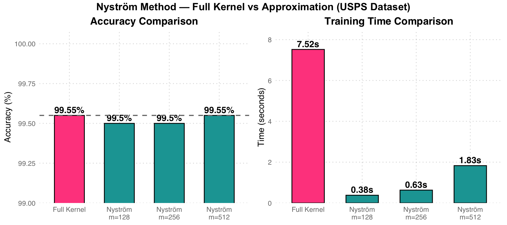
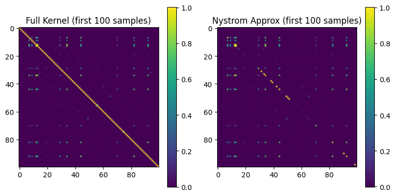
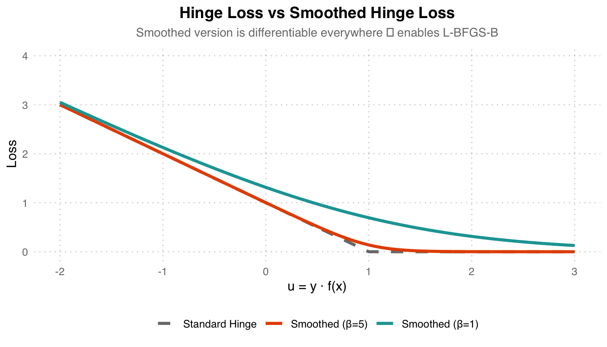
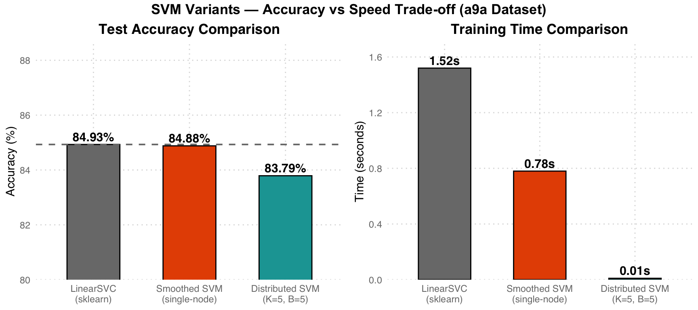
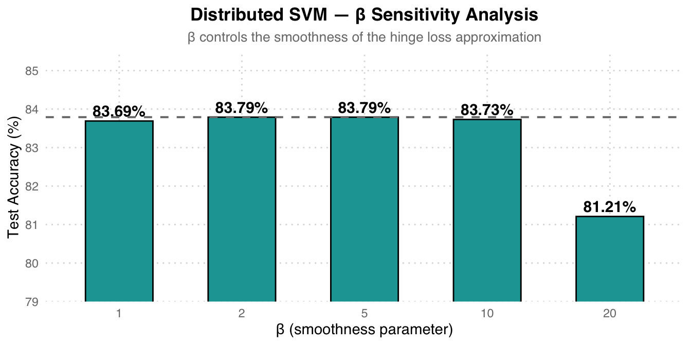

%%{init: {"theme": "base", "themeVariables": {"fontSize": "18px"}, "flowchart": {"padding": 35}}}%%
flowchart LR
A["Full Gram Matrix K (n×n) "] --> B["Sample m points "]
B --> C["K_mm (m×m) "]
B --> D["K_nm (n×m) "]
C --> E["Eigen-decompose K_mm "]
D --> F["Nyström Approx:\nK ≈ K_nm K_mm⁻¹ K_nm^T "]
style A fill:#FCE4EC,color:#C62828,stroke:#F48FB1,stroke-width:2px
style B fill:#F5F5F5,color:#424242,stroke:#BDBDBD,stroke-width:2px
style C fill:#E3F2FD,color:#1565C0,stroke:#90CAF9,stroke-width:2px
style D fill:#E3F2FD,color:#1565C0,stroke:#90CAF9,stroke-width:2px
style E fill:#FFF3E0,color:#E65100,stroke:#FFCC80,stroke-width:2px
style F fill:#E8F5E9,color:#2E7D32,stroke:#A5D6A7,stroke-width:2px
Big Data Analysis
巨量資料分析 · 國立中興大學 資料科學與資訊計算研究所
Assignments / 作業
Reading Assignment — Nyström Method / 論文閱讀
Paper / 論文： Using the Nyström Method to Speed Up Kernel Machines Authors / 作者： Christopher K. I. Williams & Matthias Seeger (NIPS 2000)
論文摘要： Kernel-based 方法（如 SVM、Gaussian Process）的主要瓶頸在於 Gram matrix 的計算與反矩陣操作，時間複雜度為 O(n³)。本論文提出使用 Nyström method 近似 Gram matrix — 從 n 筆訓練資料中僅抽出 m 筆，計算小矩陣後再展開為全域近似，將計算量從 O(n³) 降為 O(m²n)。
Core Idea / 核心概念
Nyström 流程： 從完整的 n×n Gram matrix（粉紅色，計算成本極高）中，隨機抽取 m 筆樣本組成 藍色 子矩陣 K_mm 與 K_nm，再透過 eigen-decomposition（橘色）重建 綠色 近似矩陣。當 m << n 時大幅加速。
Key Formulas / 關鍵公式
Mercer Expansion (Kernel 展開)：
\[K(x, y) = \sum_{i=1}^{\infty} \lambda_i \phi_i(x) \phi_i(y)\]
Nyström Approximation (近似公式)：
\[\tilde{K} = K_{nm} K_{mm}^{-1} K_{nm}^T\]
Complexity Reduction / 複雜度降低：
\[O(n^3) \rightarrow O(m^2 n), \quad m \ll n\]
Homework — Nyström Kernel Ridge Classification / 作業：Nyström 加速 Kernel Ridge
Task / 任務： Implement the Nyström method to accelerate RBF Kernel Ridge Classification on the USPS handwritten digit dataset (binary: digit “4” vs. rest). 實作 Nyström 方法加速 RBF Kernel Ridge 二元分類，資料集為 USPS 手寫數字（辨識數字 4）。
Dataset / 資料集： USPS — 7,291 training + 2,007 test images, 256 features (16×16 pixels)
Method / 方法： RBF Kernel (σ=4) + Ridge Regression (λ=0.001) + Nyström Approximation (m = 128, 256, 512)
Pipeline Overview / 整體流程
%%{init: {"theme": "base", "themeVariables": {"fontSize": "18px"}, "flowchart": {"padding": 35}}}%%
flowchart LR
A["USPS 7291×256 "] --> B["StandardScaler "] --> C["RBF Kernel σ=4 "]
C --> D["Full: K (7291×7291) "]
C --> E["Nyström: K_mm + K_nm "]
D --> F["Ridge Solve "]
E --> F
F --> G["Predict ±1 "]
style A fill:#E3F2FD,color:#1565C0,stroke:#90CAF9,stroke-width:2px
style B fill:#F5F5F5,color:#424242,stroke:#BDBDBD,stroke-width:2px
style C fill:#FFF3E0,color:#E65100,stroke:#FFCC80,stroke-width:2px
style D fill:#FCE4EC,color:#C62828,stroke:#F48FB1,stroke-width:2px
style E fill:#E8F5E9,color:#2E7D32,stroke:#A5D6A7,stroke-width:2px
style F fill:#E3F2FD,color:#1565C0,stroke:#90CAF9,stroke-width:2px
style G fill:#E8F5E9,color:#2E7D32,stroke:#A5D6A7,stroke-width:2px
Pipeline 說明： USPS 資料先標準化，再分為兩條路徑：粉紅色 Full Kernel 計算完整 7291×7291 Gram matrix，綠色 Nyström 僅計算子集矩陣 K_mm + K_nm。兩者皆透過 Ridge Regression 求解係數向量 α，最終預測 ±1。
Implementation / 實作
# RBF Kernel function
def rbf_kernel(X1, X2, sigma=4.0):
sq_dists = (np.sum(X1**2, axis=1)[:, None]
+ np.sum(X2**2, axis=1)[None, :]
- 2 * X1 @ X2.T)
return np.exp(-sq_dists / (2 * sigma**2))
# Kernel Ridge: solve (K + λI) α = y
def kernel_ridge_train(K, y, lam=1e-3):
n = K.shape[0]
return np.linalg.solve(K + lam * np.eye(n), y)
# Nyström approximation
def nystrom_approximation(X_train, m, sigma=4.0):
indices = np.random.choice(n, m, replace=False)
X_sub = X_train[indices]
K_mm = rbf_kernel(X_sub, X_sub, sigma)
K_nm = rbf_kernel(X_train, X_sub, sigma)
K_mm_inv = np.linalg.inv(K_mm + 1e-8 * np.eye(m))
K_approx = K_nm @ K_mm_inv @ K_nm.T
return K_approx, indices, K_nm, K_mm_invResults / 結果
| Method | Errors | Accuracy | Train Time (s) |
|---|---|---|---|
| Full Kernel | 9 | 99.55% | 7.52 |
| Nyström m=128 | 10 | 99.50% | 0.38 |
| Nyström m=256 | 10 | 99.50% | 0.63 |
| Nyström m=512 | 9 | 99.55% | 1.83 |

效能分析： 粉色 Full Kernel 需 7.52 秒計算完整 7291×7291 Gram matrix。青色 Nyström m=128 僅需 0.38 秒（加速約 20 倍），且 accuracy 幾乎不變（99.50% vs 99.55%）。m=512 時精度完全匹配 Full Kernel，訓練時間仍節省 75%。
Gram Matrix Visualization / Gram 矩陣視覺化

矩陣比較： 左圖為完整 Gram matrix（前 100 筆樣本），右圖為 Nyström 近似結果。兩者結構高度相似，驗證了 Nyström 方法在保留 kernel 結構的同時大幅減少計算量。
Final Project / 期末報告
Smoothed & Distributed SVM / 平滑化與分散式 SVM
Task / 任務： Implement and compare three SVM variants: (1) standard LinearSVC, (2) Smoothed SVM using log-sum-exp approximation of hinge loss, and (3) Distributed Smoothed SVM with communication-efficient gradient aggregation. 實作並比較三種 SVM 變體：標準 LinearSVC、平滑化 SVM（log-sum-exp 近似 hinge loss）、以及分散式平滑 SVM（通訊高效梯度聚合）。
Dataset / 資料集： a9a (Adult Income) — 32,561 training + 16,281 test samples, 123 features
Method / 方法： LinearSVC baseline → Smoothed Hinge Loss (β=5) + L-BFGS-B → Distributed SGD (K=5 workers)
Three SVM Variants / 三種 SVM 變體
%%{init: {"theme": "base", "themeVariables": {"fontSize": "18px"}, "flowchart": {"padding": 35}}}%%
flowchart TD
DATA["a9a Dataset 32K×123 "] --> S1["LinearSVC (sklearn) "]
DATA --> S2["Smoothed SVM (L-BFGS-B) "]
DATA --> S3["Distributed Smooth SVM "]
S1 --> R1["Baseline Accuracy "]
S2 --> R2["Single-node Accuracy "]
S3 --> |"K=5 workers"| R3["Distributed Accuracy "]
S3 --> W1["Worker 1 "]
S3 --> W2["Worker 2 "]
S3 --> W3["... "]
S3 --> W4["Worker 5 "]
style DATA fill:#E3F2FD,color:#1565C0,stroke:#90CAF9,stroke-width:2px
style S1 fill:#F5F5F5,color:#424242,stroke:#BDBDBD,stroke-width:2px
style S2 fill:#FFF3E0,color:#E65100,stroke:#FFCC80,stroke-width:2px
style S3 fill:#E8F5E9,color:#2E7D32,stroke:#A5D6A7,stroke-width:2px
style R1 fill:#F5F5F5,color:#424242,stroke:#BDBDBD
style R2 fill:#FFF3E0,color:#E65100,stroke:#FFCC80
style R3 fill:#E8F5E9,color:#2E7D32,stroke:#A5D6A7
style W1 fill:#E8F5E9,color:#2E7D32,stroke:#A5D6A7
style W2 fill:#E8F5E9,color:#2E7D32,stroke:#A5D6A7
style W3 fill:#E8F5E9,color:#2E7D32,stroke:#A5D6A7
style W4 fill:#E8F5E9,color:#2E7D32,stroke:#A5D6A7
架構說明： 灰色 = sklearn LinearSVC baseline，橘色 = 單節點 Smoothed SVM（L-BFGS-B 最佳化），綠色 = 分散式版本（K=5 workers，每輪各 worker 計算局部梯度再聚合）。
Smoothed Hinge Loss / 平滑化 Hinge Loss
Standard hinge loss is non-differentiable at u=1. The smoothed version uses log-sum-exp to create a differentiable approximation:
\[\ell_\beta(u) = \frac{1}{\beta} \log\left(1 + e^{\beta(1-u)}\right)\]

Loss 比較： 灰色虛線 標準 Hinge Loss 在 u=1 處不可微。橘色 Smoothed (β=5) 近似度最高，接近原始 hinge 但處處可微。青色 (β=1) 較平滑但離原始 hinge 較遠。β 越大越接近原始形狀。
Distributed Gradient Aggregation / 分散式梯度聚合
# Distributed Smoothed SVM — Communication-efficient gradient
K = 5 # number of workers
B = 5 # communication rounds
beta = np.zeros(X_train.shape[1])
for b in range(B):
# Pilot gradient (computed on worker 0)
grad_pilot = compute_gradient(beta, X_pilot, y_pilot, lambda_, beta_smooth)
# Each worker computes local gradient correction
grad_total = np.zeros_like(beta)
for X_k, y_k in zip(split_X, split_y):
grad_k = compute_gradient(beta, X_k, y_k, lambda_, beta_smooth)
grad_total += (grad_k - grad_pilot) * (len(X_k) / len(X_train))
# Aggregate: surrogate gradient = pilot + corrections
beta -= 0.1 * (grad_pilot + grad_total)分散式策略： 資料分成 K=5 份。每輪僅需一個 pilot worker 計算完整梯度，其餘 workers 計算「與 pilot 的梯度差」（correction term），最後聚合。相比每個 worker 都傳完整梯度，此方法大幅降低通訊量。
Results / 結果
| Model | Test Accuracy | Training Time |
|---|---|---|
| LinearSVC (sklearn baseline) | 84.93% | 1.52s |
| Smoothed SVM (single-node, L-BFGS-B) | 84.88% | 0.78s |
| Distributed Smoothed SVM (K=5, B=5) | 83.79% | 0.01s |

Trade-off 分析： 灰色 LinearSVC 為 baseline（84.93%）。橘色 Smoothed SVM 精度幾乎相同（84.88%），但因 L-BFGS-B 最佳化更高效而更快（0.78s vs 1.52s）。青色 Distributed 版本犧牲 ~1.1% 精度換取 150 倍加速（0.01s），展現了分散式計算在大規模資料下的潛力。
Ablation Study — β Sensitivity / 消融實驗：β 敏感度
| β (smoothness) | Test Accuracy |
|---|---|
| 1 | 83.69% |
| 2 | 83.79% |
| 5 | 83.79% |
| 10 | 83.73% |
| 20 | 81.21% |

β 選擇建議： β=2 和 β=5 表現最佳且相同（83.79%）。β 太大（=20）反而導致精度下降至 81.21%，因為過度逼近不可微的原始 hinge loss，造成 gradient 估計不穩定。β=5 為最佳平衡點。